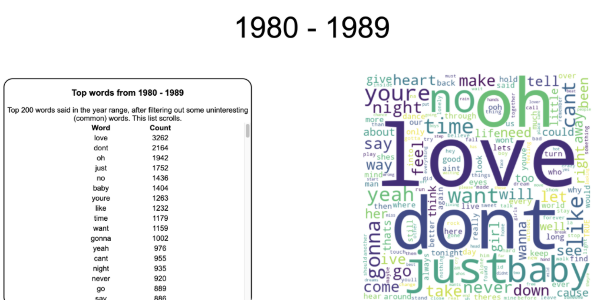

lyrical analysis

For an [early] CS class, I along with two partners created a Flask web app to visually display lyrical trends over the past 50 years. The frontend is build with HTML, CSS, and Javascript, and the backend is built on python with SQL.
My school won't host the site for us, so I recently familiarized myself with AWS EC2 and Cloudfront, creating an linux instance to host it myself. Check it out at lyrics.jackrybarczyk.com